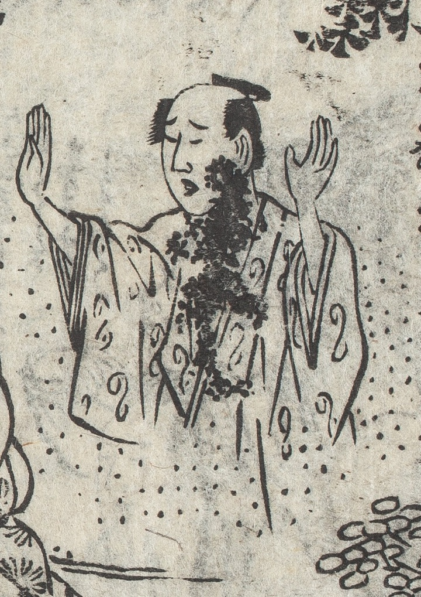

幽霊；ユウレイ，亡魂；ボウコン，男；オトコ

殺された川合宗太夫の幽霊。両手を上げて妻の殺害を止めようとするかのようである。体には殺されたときの血がついたまま。髪を結っている。足がなく、周囲にはモヤがかかっている。
著作者：式亭三馬作・豊國画／出典：親書誌：U426_nichibunken_0450：淺草觀音利益仇討雷太郎強惡物語／日付：2021／資源識別子：U426_nichibunken_0450_0002_0000
Copyright (c)2010- International Research Center for Japanese Studies, Kyoto, Japan. All rights reserved.